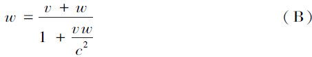
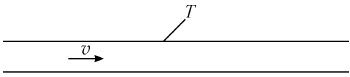
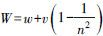
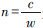
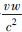
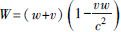

在实践上我们使钟和量杆运动所能达到的速度与光速相比是相当小的；因此我们不大可能将前节的结果直接与实在的情况比较。但是，另一方面，这些结果必然会使读者感到十分奇特；因此，我将从这个理论再来推出另外一个结论，这个结论很容易从前面的论述中推导出来，而且这个结论已十分完美地为实验所证实。
在第6节我们推导出同向速度相加定理，其所取形式也可以由经典力学的假设推出。这个定理也可以很容易地由伽利略变换(第11节)推演出来。我们引进相对于坐标系K′ 按照下列方程运动的一个质点来代替在车厢里走动的人
x′=w t′
借助于伽利略变换的第一和第四方程，我们可以用x 和t 来表示x′ 和t′ ，我们得到其间的关系式
x =(v +w )t
这个方程所表示的正是该点相对于坐标系K 的运动定律(人相对于路基的运动定律)。我们用符号W 表示这个速度，像在第6节一样，我们得到
W=v+w (A)
但是我们同样也可以根据相对论来进行这一探讨。在方程
x′=w t′
中我们必须引用洛伦兹变换的第一和第四方程借以用x 和t 来表示x′ 和t′ 。这样我们得到的就不是方程(A)，而是方程

这个方程对应于以相对论为依据的另一个同向速度相加定理。现在引起的问题是这两个定理哪一个更好地与经验相符合。关于这个问题，我们可以从杰出的物理学家斐索在半个多世纪以前所做的一个极为重要的实验上得到启发，这个实验在后来曾由一些最优秀的实验物理学家重新做过，因此，这个实验的结果是无可怀疑的。这个实验涉及下述问题。光以特定速度w 在静止的液体中传播。现在如果上述液体以速度v 在管T 内流动，那么光在管内沿箭头(图3)所指方向的传播速度有多快呢?

图3
按照相对性原理，我们当然必须认定光相对于液体总是以同一速度w 传播的，不论此液体相对于其他物体运动与否。因此，光相对于液体的速度和液体相对于管的速度皆为已知，我们需要求出光相对于管的速度。
显然我们又遇到了第6节所论述的问题。管相当于铁路路基或坐标系K ，液体相当于车厢或坐标系K′ ，而光则相当于沿着车厢走动的人或本节所引进的运动质点。如果我们用W 表示光相对于管的速度，那么W 就应按照方程(A)或方程(B)计算，视伽利略变换符合实际还是洛伦兹变换符合实际而定。实验 [1] 作出的决定是支持由相对论推出的方程(B)，而且其符合的程度的确是很精确的。根据塞曼最近所作的极其卓越的测量，液体流速v 对光的传播的影响确实可以用公式(B)来表示，而且其误差恒在百分之一以内。
然而我们必须注意到这一事实，即早在相对论提出以前， 洛伦兹就已经提出了关于这个现象的一个理论。这个理论纯属电动力学性质，并且是引用关于物质的电磁结构的特别假说而得出的。然而这种情况丝毫没有减弱这个实验作为支持相对论的判决试验的确实性，因为原始的理论是由麦克斯韦-洛伦兹电动力学建立起来的，而后者与相对论并无丝毫抵触之处。说得更恰当些，相对论是由电动力学发展而来的，是以前相互独立的用以组成电动力学本身的各个假说的一种异常简明的综合和概括。
[1] 斐索发现

,其中
是液体的折射率。另一方面由于
与1相比相当小，我们可以首先用
代替(B)，因而按照同一级的近似程度可以再用 代替(B)，而此式是与斐索的实验结果相符合的。